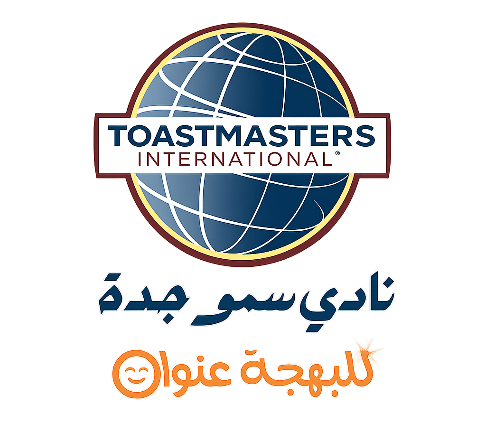

نادي سمو جدة
اللقاءات والإنجازات في مكان واحد
اختاري القسم الذي ترغبين في استعراضه
صور عناوين اللقاءات وإحصاءات الحضور7 لقاءات · من 224 إلى 230
الحضور والمشاريع والأدوار والجوائز23 عضوة · مرتّبة أبجديًا
أفضل اللقاءات وحيوية العضوات والإنجازات4 لوحات تلخّص حصاد النادي